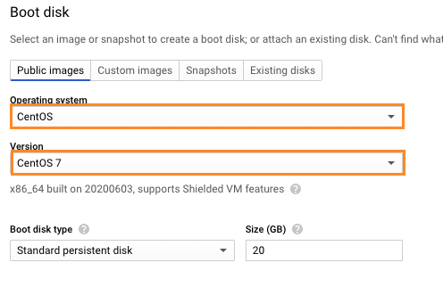
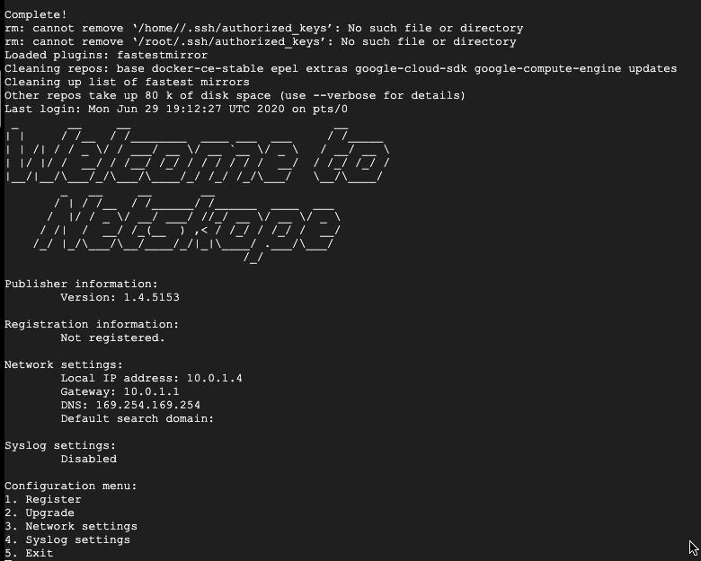

Deploy a Publisher
The Netskope Private Access Publisher can be deployed on AWS, Azure, GCP, HyperV, VMWare ESX, and any CentOS-based virtual machine (VM). The following sections provide instructions for each of these deployments.
The publisher needs to be deployed on the network where the private app will be accessed.
Create a publisher to deploy on your network and use with a private app. The token generated in this procedure is used to deploy the publisher, so be sure to make a copy.
Go to Settings > Security Cloud Platform > Publishers.
Click New Publisher.
Enter a publisher name (like
AWS US-WestWing publisher).
Click Save and Continue.
Click Generate Token.

Click Copy to get the registration token.
Click Done.
After deploying the publisher, return to the Publisher page to verify the status is Connected.
 |
The Publishers page shows each Publisher's name, status, version, CN, and number of connected apps. To customize the columns shown on the page, click the gear icon  in the table header and check the columns you want to see. To edit the name or delete a Publisher, click the menu icon
in the table header and check the columns you want to see. To edit the name or delete a Publisher, click the menu icon  in the row a Publisher is listed.
in the row a Publisher is listed.
Perform these steps in the AWS console.
Sign in to your Amazon Web Services (AWS) console.
Click Services > Find services. Search for and then select EC2.
Click Instances in the left sidebar menu.
Click Launch Instance.
Click AWS Marketplace in the left sidebar menu.
Enter
Netskopein the search bar.Netskope Private Access Publishershould appear in the search results. Click Select.
Select t3.medium as the instance type.
Click Next: Configure Instance Details.
The token you copied from the Netskope UI is needed to complete these steps.
Enter
1in the Number of instances field.Select the VPC where the application you want to publish via Netskope is deployed in the Network field.
Keep the default values for the remaining fields.
Click Advanced Details to expand this section.
In the User data section, select the As text option.
Enter the Netskope Publisher registration token into the User Data text field.
Adding a name tag is optional, but doing so will make it easier to identify your Netskope Publisher EC2 instance.
Click the Add Tags tab, near the top of the page.
Click Add Tag.
Enter
Namein the Key field.Enter
AWS US-WestWing publisherin the Value field.Click Review and Launch.
Review the information in the AMI Details Instance Type sections.
Click Launch.
Select or create a key pair.
Click Launch Instances.
Review the information on the Launch Status page.
Click View Instances.
You should now see a new EC2 instance with the name
AWS US-WestWing publisher(if you completed the Add a Name Tag steps).AWS typically takes several minutes to launch EC2 instance and run status checks. Wait until your Instance State is Running and Status Checks have passed.
The token you copied when creating a new publisher is needed to complete these steps:
SSH into the Publisher (default username:
centos, default password:centos).When prompted for a menu choice, select Register.
When requested, enter the Netskope registration token, and then click Enter.
After you have deployed the Publisher, the default login is set to centos with a default password of centos. Change this password as soon as possible to ensure a secure configuration.
Factor Firewall Rules
If you have a firewall (as an example AWS "Security groups") between the publisher and the application, it needs to be configured to allow the publisher to access the application.
For AWS: Modify the applications security group to allow inbound connections from the publisher on applications ports.
Notes on Security groups:
A publisher doesn't need any inbound connections. A a result, you can configure security groups to deny all inbound traffic.
A publisher needs access to DNS and to private access cloud (on port 443).
Perform these steps in the Azure console.
Login to Microsoft Azure portal ( https://portal.azure.com/ )
Click Virtual machines.
Click + Add.
Click See all images and then search for
CentOS-based Rogue.Choose CentOS-based 7.7 by Rogue Wave Software (publisher).
Select Standard D2s v3 (2 vcpus, 8 GB memory) as the size.
Note
B1ms is good for most small deployments.
Click Create.
Enter a machine name (Example:
NetskopePublisherfor Name).Enter
centosfor Username.Copy and paste your public SSH key under SSH public key. If you do not have a public SSH key, click Generate new key pair.
Choose an existing or create a new Resource group under Resource Group. For testing, we recommend you create a new Resource group. The resource group is like a folder where it puts all VM associated resources.
Click OK.
Click Select.
Choose SSH for Select public inbound ports.
Click OK.
Click Create.
Wait until Deployment will be finished.
Click Virtual machines.
Select the newly created VM.
Find a public IP address.
On your computer terminal execute:
ssh -i <your_private_ssh.key> centos@<ipaddress>.
Run this command in your SSH session:
curl https://s3-us-west-2.amazonaws.com/publisher.netskope.com/latest/generic/bootstrap.sh | sudo bash; sudo su - $USER; exit
This will take about 10 minutes. At the end of this process, you have a fully functional Netskope Publisher and can register it.
The token you copied when creating a new publisher is needed to complete these steps:
SSH into the Publisher (default username:
centos, default password:centos).When prompted for a menu choice, select Register.
When requested, enter the Netskope registration token, and then click Enter.
After you have deployed the Publisher, the default login is set to centos with a default password of centos. Change this password as soon as possible to ensure a secure configuration.
The Netskope Publisher allows for zero trust network access to applications and hosts in your public cloud or private data center. This includes the ability to leverage a Publisher in Google Cloud Platform.
This topic explains how to upload an OVA into Google Cloud Platform Storage and import it into a compute instance. Knowledge of the Netskope UI and Google Cloud Platform are required, along with:
A Netskope Tenant
A copy of your tenant REST API token
Netskope Publisher OVA file from your tenant
A Google Cloud Platform account with a working VPC setup and API permissions.
To configure a Publisher in GCP:
Log in to Google Cloud Platform at https://console.cloud.google.com/.
Click the menu icon in the top left and select Compute Engine and then VM instances.

Click Create Instance.

Enter a name for the instance, like
netskope-publisher.
Select a Region and Zone. For testing purposes this can be anything. In a production environment, you want to enter the region and zone where the applications reside.

Configure the instance memory and CPU settings (2 core, 4 GB memory is the recommended setting, but for testing purposes a smaller machine will work).

Click Change under Boot disk.

Select CentOS as the Operating System and CentOS 7 as the Version. Leave the Boot disk type and Size as the defaults.
 Click Select.

Note: Steps 10-13 are optional if no other route to the internet is available.
Click Management, security, disks, networking, sole tenancy

Click Networking.

Click the pencil icon to edit the network interface.

Select your Network, Subnetwork, and specify an Ephemeral external IP.

Click Create to start the instance creation.

Once the instance is available, connect to it by clicking SSH under the Compute Engine page.

Run the following command in the SSH session to download and install the necessary components for the Publisher. This may take about 10 minutes.
curl https://s3-us-west-2.amazonaws.com/publisher.netskope.com/latest/generic/bootstrap.sh | sudo bash; sudo su - $USER; exit
At the end of this process, you have a fully functional Netskope publisher and can register it with Netskope.
When prompted for a menu choice, select Register.
 When requested, enter the Netskope registration token and click Enter.
These instructions assume that the CentOS user is configured and available on a default CentOS installation. Use an account other than root, and not named centos. Otherwise, this configuration will not work
The token you copied when creating a new publisher is needed to complete these steps:
Start with a CentOS 7-based Linux VM.
SSH into the CentOS-based system.
Run the command:
curl https://s3-us-west-2.amazonaws.com/publisher.netskope.com/latest/generic/bootstrap.sh | sudo bash; sudo su - $USER; exit
Wait about 10 minutes.
At the end of this process, you have a fully functional Netskope publisher and can register it with Netskope.
When prompted for a menu choice, select Register.
When requested, enter the Netskope registration token and click Enter.
Download the VHDX file, and then perform these steps in the Hyper-V console.
If you want to validate the integrity of the VHDX, you can download the SHA hash from here.
Launch the Microsoft Hyper-V Manager and select the Action New > Virtual Machine....

Enter a VM Name (like NPA Publisher), optionally an installation location, and then click Next.
Tip
Name the Publisher to describe its location and/or application use.

Leave Generation 1 selected and click Next.

Specify the amount of memory for the NPA Publisher (2048 is recommended for most use cases) and click Next.

Select a network adapter to attach the NPA Publisher that has Internet access and click Next.

Select Use an existing virtual hard disk and then Browse to the downloaded VHDX file. When finished, click Next.

Confirm the Hyper-V Wizard configuration options and click Finish.

Now you can Start your NPA Publisher in Hyper-V.

Get the IP address provided by the Hyper-V Manager to SSH into a Publisher for Network Settings.

The token you copied when creating a new publisher is needed to complete these steps:
SSH into the Publisher (default username:
centos, default password:centos).When prompted for a menu choice, select Register.
When requested, enter the Netskope registration token, and then click Enter.
After you have deployed the Publisher, the default login is set to centos with a default password of centos. Change this password as soon as possible to ensure a secure configuration.
The token you copied when creating a new publisher is needed to complete these steps:
Download the OVA from the Publisher page in the Netskope UI. Go to Settings > Security Cloud Platform > Publishers and click Publisher OVA .

If you want to validate the integrity of the OVA, you can download the SHA hash from here.
Install this OVA into your ESXi machine.
SSH into the publisher (default username:
centos, default password:centos)When prompted for a menu choice, select Register.
When requested, enter the Netskope registration token and click Enter.
After you have deployed the Publisher, the default login is set to centos with a default password of centos. This password should be changed as soon as possible to ensure a secure configuration.